ITP Projekte
2023 - 2024
Calc (Calc is Slang für Calculator)
Erstes Projekt im JavaFX Framework
Java & JavaFX
übersicht
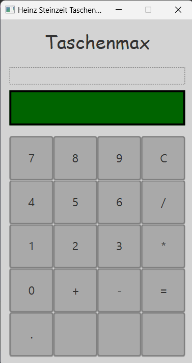 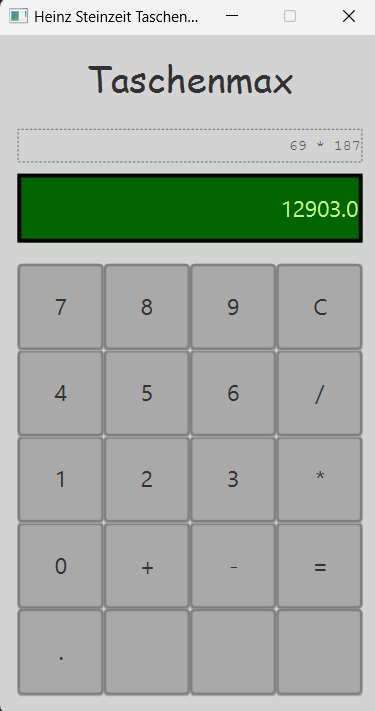Schere Stein Papier
Erstes Projekt mit Versionsverwaltung durch Github
Java & JavaFX
Übersicht

Auswahl getroffen
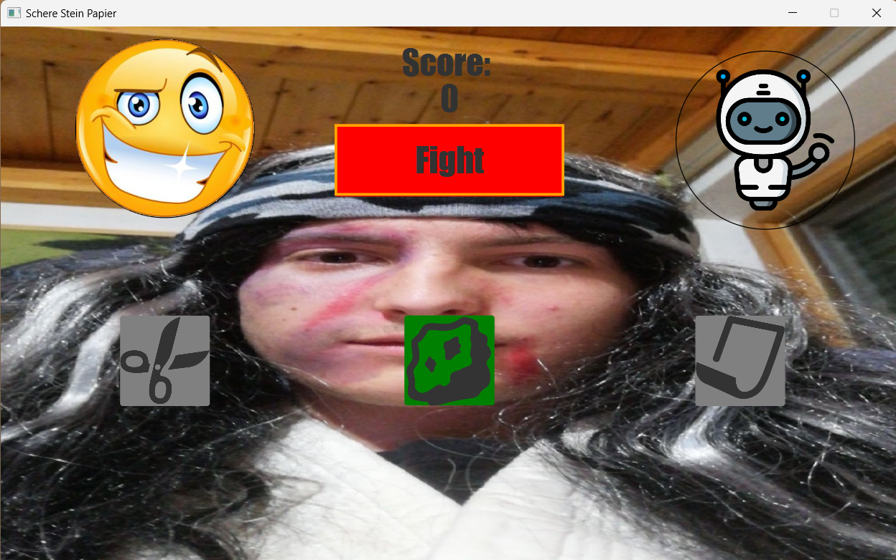
Ergebnis
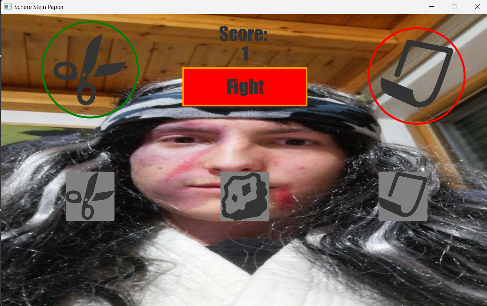


Minesweeper
Erstes großes Projekt
Java & JavaFX,
klassisches Projektmanagement
übersicht
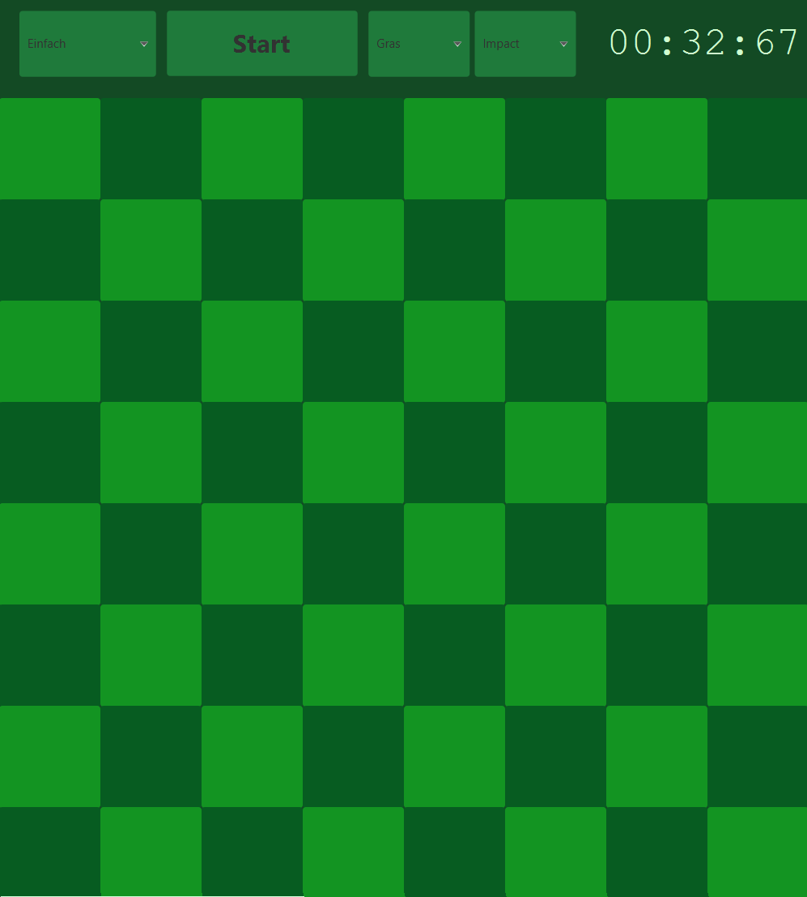 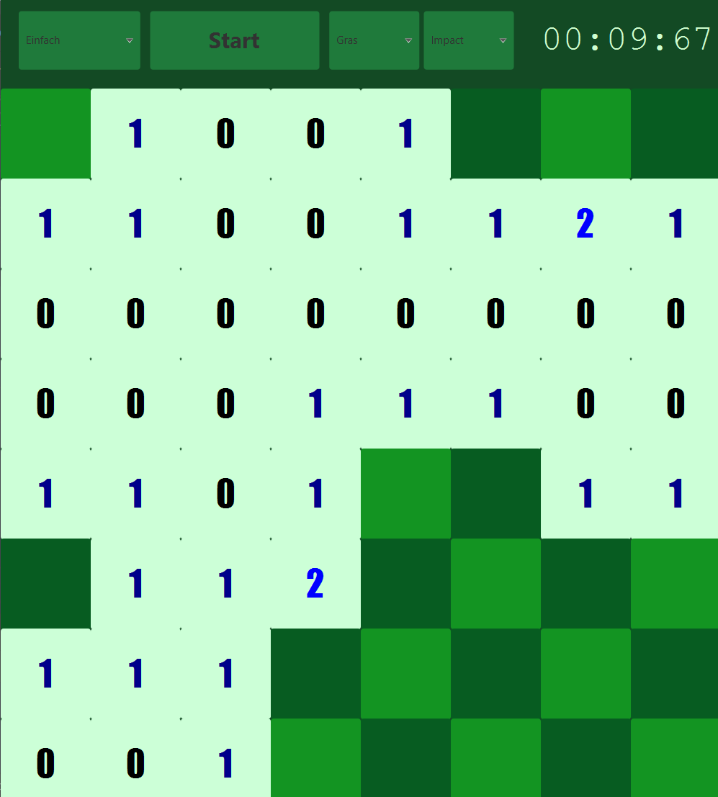Ziel war es bei diesem Projekt die Rekursion zu lernen und umzusetzen.
displayAdjacentBombCount(posX + i - 1, posY + j - 1,
checkAdjacentBombCount(posX + i - 1, posY + j - 1));
Hier wird eine Funktion wieder und wieder aufgerufen, bis sie alle möglichen Felder geprüft hat.
Snake
Java & JavaFX,
klassisches Projektmanagement
übersicht


Gameplay

Hier haben wir zum ersten mal alle paar Sekunden eine Funktion aufgerufen.
timeline = new Timeline(
new KeyFrame(
Duration.millis(this.speed),
new EventHandler<ActionEvent>() {
@Override
public void handle(ActionEvent actionEvent) {
...
}
}));
timeline.setCycleCount(Animation.INDEFINITE);
timeline.play();
Quizapp (Kahoot basiert)
Aus zeitlichen Gründen nicht fertig geworden (Ende des Schuljahres)
Erstes Projekt mit agilem Projektmanagement
Hauptmenü
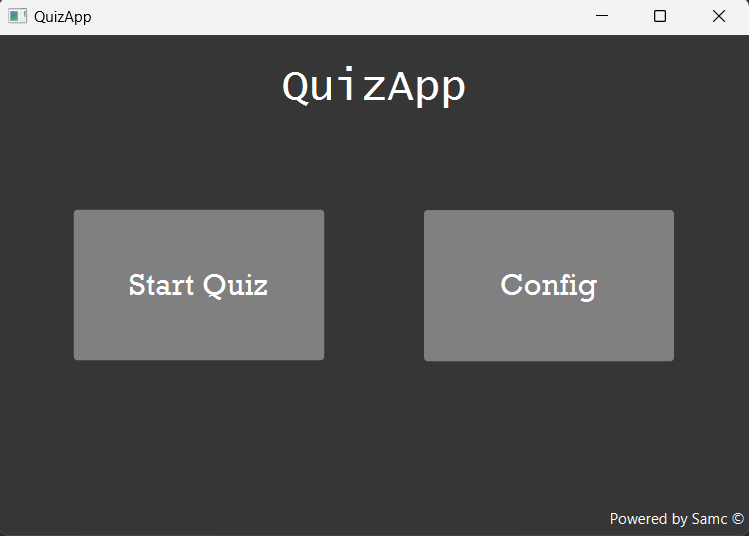Fragen Konfiguration
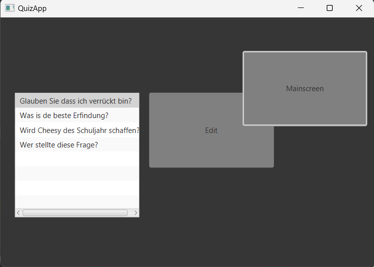Hätte noch designed und bearbeitet werden sollen...
True / False Fragen
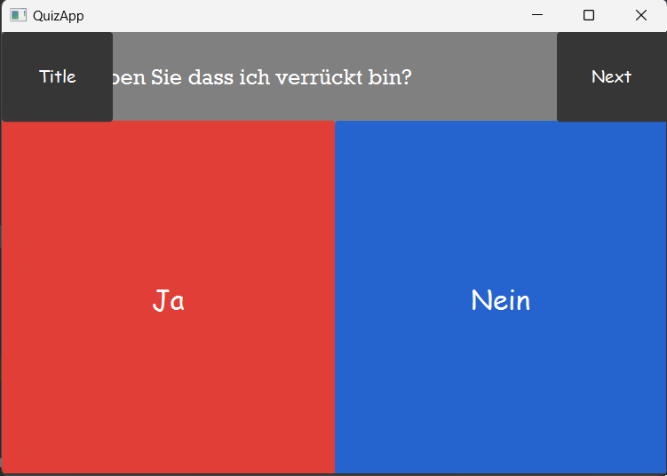Auswahlfragen
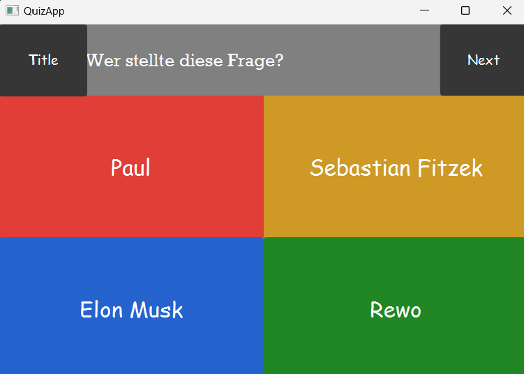Crossy Road
Größtes Projekt bisher (5er Team)
Java & JavaFX, agiles Projektmanagement
Hauptmenü
Einstellungen
Hier können die Lautstärken geregelt werden und Funktionen aktiviert werden
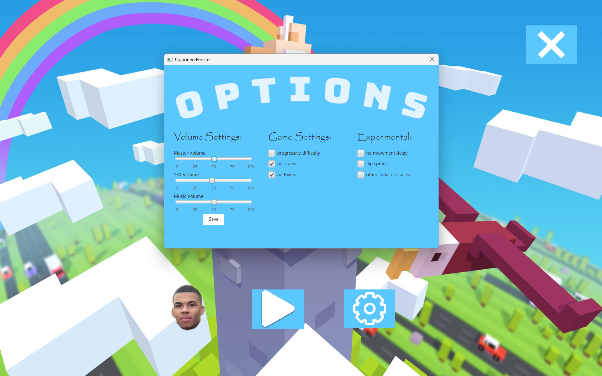Shop
Mit Münzen die man im Spiel sammelt kann man sich diverse Skins kaufen.
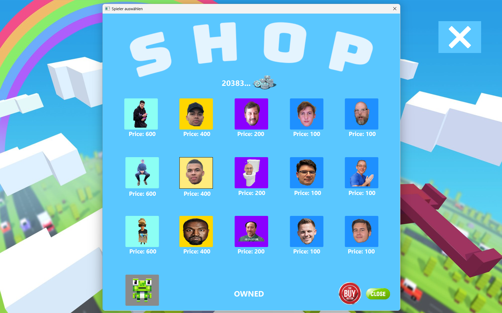Skin ausgewählt
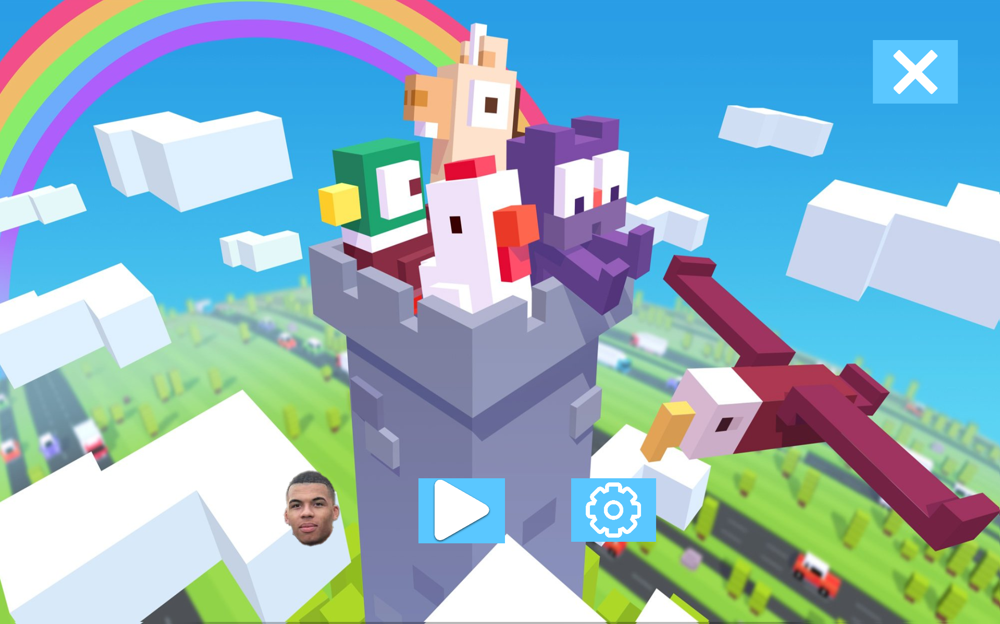Gameplay
Wie im normalen Crossy Road darf man hier von keinen Fahrzeugen getroffen werden.
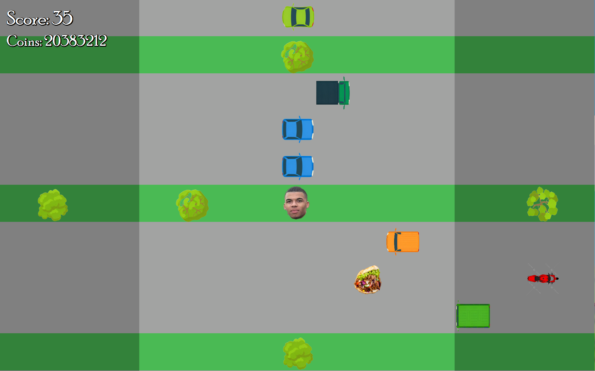Experimentelle Funktionen
Hier wurden alle Bilder verdreht und einige lustige Bilder als Hindernisse hinzugefügt.
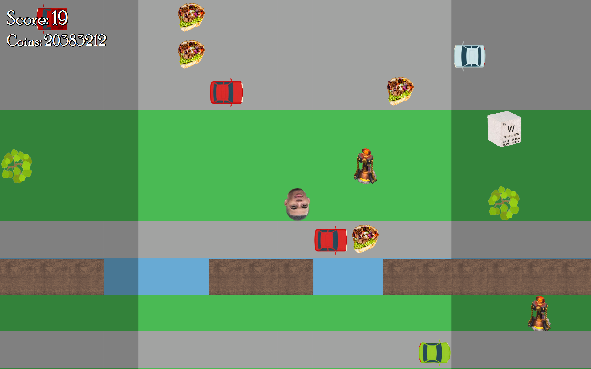Game Over
Hier kann man sich mit seinem Highscore verewigen.
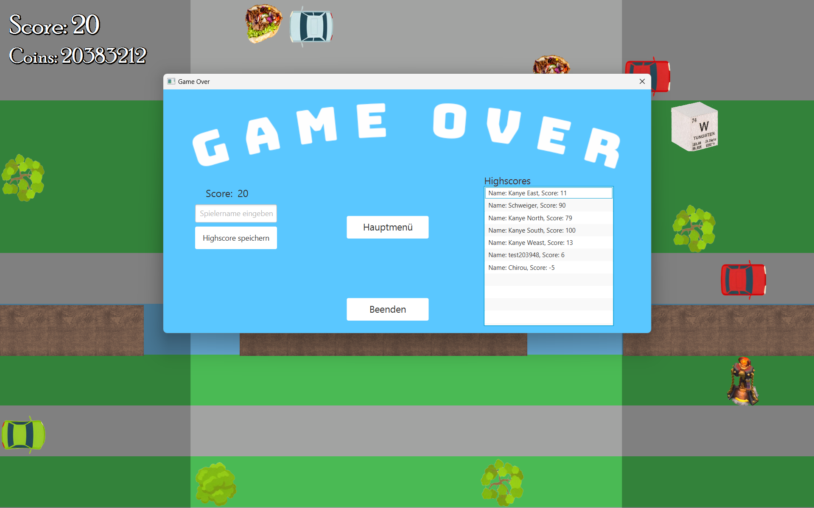Skala des Projekts
Alle diese Punkte sind eigene Codefiles
mit hunderten von Zeilen.